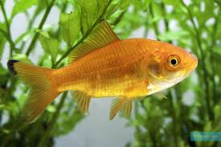

El pez dorado es un pez de agua dulce muy popular como mascota. Pertenece a la familia de los carpas y su nombre científico es Carassius auratus. Es conocido por su color dorado o anaranjado brillante.
El pez dorado vive en agua dulce como estanques, acuarios y lagos tranquilos. Prefiere agua limpia y temperaturas moderadas.
Se alimenta de pequeñas plantas, algas, insectos y comida especial para peces.